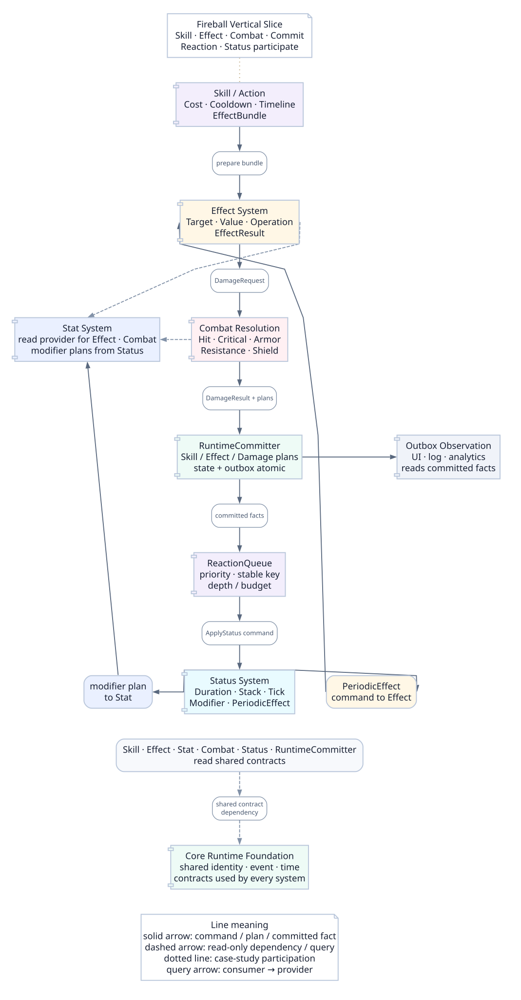

Integration Map
Integration Map은 Core, Stat, Effect, Skill, Combat, Status가 어느 방향으로 의존하고 어떤 데이터를 주고받는지 정리하는 기준 문서다. 목표는 각 시스템을 독립적으로 테스트하면서도 Fireball 같은 실제 플레이 흐름이 끊기지 않게 만드는 것이다.
하나의 화살표가 아니라, 세 가지 관점
학습 순서, 실제 실행 흐름, 코드 의존성은 서로 다르다. 관점을 전환해 같은 시스템을 다른 방식으로 읽는다.
전체 의존성 지도

아래 그림은 런타임 협업과 데이터 읽기 방향을 요약한다. 컴파일 의존성, 실행 호출, 이벤트 반응을 하나의 화살표 의미로 섞지 않으며, 구현에서는 각 연결을 작은 Port/API로 분리한다.
시스템별 계약
| 흐름 | 전달 데이터 | 의미 |
|---|---|---|
| Core → 모든 시스템 |
EntityId
,
TagSet
,
SourceId
,
EventBus
,
Time
,
RandomStream
|
모든 시스템이 공유하는 최소 런타임 언어다. |
| Stat → Effect / Combat |
getFinalValue(statId, context)
|
Effect와 Combat은 최종 스탯 값을 읽지만 계산 파이프라인을 소유하지 않는다. |
| Skill → Effect |
EffectBundle
,
EffectContext
|
Skill은 release marker에서 EffectBundle 실행을 요청한다. |
| Effect → Combat |
DamageRequest
|
DamageEffect는 최종 피해 공식을 직접 계산하지 않는다. |
| Effect → Status |
ApplyStatusRequest
|
ApplyStatusEffect는 지속시간과 tick을 직접 관리하지 않는다. |
| Combat → EventBus |
DamageResult
,
OnDamageResolved
|
피해 계산 결과와 로그를 전파한다. |
| Status → Stat |
StatModifier(sourceId=statusInstanceId)
|
상태가 제공하는 수치 변경은 Modifier로 등록/제거한다. |
| Status → Effect |
PeriodicEffect
|
DoT, HoT, aura tick은 Effect를 다시 실행한다. |
수직 슬라이스
Fireball 예제는 이 흐름을 한 번에 확인할 수 있는 대표 수직 슬라이스다. 마나 비용, 쿨다운, 사거리 검사는 Skill에서 처리되고, 피해와 Burn 부여는 Effect에서 요청되며, 실제 피해 숫자는 Combat이 계산하고 Burn 지속 관리는 Status가 맡는다.
금지 의존성
| 금지 구조 | 문제 | 대안 |
|---|---|---|
| Skill이 최종 피해를 직접 계산 | Effect / Combat / Log 구조가 무너진다. | Skill은 EffectBundle 실행 타이밍만 만든다. |
| DamageEffect 안에 모든 전투 공식 작성 | 게임별 공식 교체와 테스트가 어려워진다. | DamageRequest를 만들고 CombatResolver에 위임한다. |
| Status가 Stat 값을 직접 변경 | 중첩, 제거, 저장, 디버그가 어려워진다. | StatModifier를 sourceId로 등록/제거한다. |
| Combat이 장비 인벤토리를 직접 조회 | 장비 시스템과 전투 공식이 강하게 결합된다. | 장비는 Modifier를 공급하고 Combat은 StatSystem을 읽는다. |
| Status tick이 Skill 쿨다운을 직접 수정 | 시간, 상태, 스킬 책임이 뒤섞인다. | EventBus 또는 명시적 Effect/Policy를 통해 요청한다. |
이벤트 흐름
| 이벤트 | 발행자 | 구독 예시 |
|---|---|---|
OnSkillUsed
|
SkillExecutor | UI 로그, 장비 triggered effect, 업적 |
OnEffectExecuted
|
EffectExecutor | DebugTrace, 연쇄 효과, 튜토리얼 |
OnDamageResolved
|
CombatResolver | 피해 숫자 UI, 흡혈, 반사 피해, 카메라 흔들림 |
OnStatusApplied
|
StatusController | 상태 아이콘, 면역 로그, 업적 |
OnStatusTick
|
StatusController | DoT 표시, 사운드, 추가 연쇄 효과 |
OnModifierChanged
|
StatSystem | 스탯 패널 갱신, 캐시 무효화 |
ReactionQueue 계약
OnDamageResolved에 흡혈, 반사, 장비 발동을 모두 즉시 구독시키면 실행 순서와 무한 연쇄가 불명확해진다. 상태를 바꾸는 반응은 이벤트를 명령으로 변환해 queue에 넣고
priority → sourceId → reactionId
순서로 처리한다.
- eventId / correlationId / causationId를 분리한다.
- 최대 reactionDepth와 반복 idempotencyKey를 둔다.
- UI·분석 subscriber는 state-mutating queue와 분리한다.
- Before/Calculated/Committed/After 이벤트 시점을 이름으로 구분한다.
DebugTrace 기준
시스템이 분리될수록 디버그 로그의 중요성이 커진다. 하나의 Fireball 실행은 sourceId와 eventId로 연결된 추적 단위를 가져야 한다.
sourceId: skill:fireball:cast_771
OnSkillUsed
SkillValidator: mana ok, cooldown ok, range ok
OnEffectExecuted
DamageEffect: targets = [enemy_001]
OnDamageResolved
base 124 → fire bonus 1.2 → resistance 0.85 → shield 20 → final 106
OnStatusApplied
Burn applied, stack 1, duration 5.0s, nextTick +1.0s완료 체크리스트
- 각 시스템이 소유하는 데이터와 읽기 전용으로 참조하는 데이터가 구분되어 있다.
- DamageEffect와 ApplyStatusEffect가 각각 Combat과 Status로 연결된다.
- Status가 제공하는 수치 변화는 StatModifier로 표현된다.
- 모든 실행 결과는 EventBus와 DebugTrace로 추적된다.
- Fireball 같은 수직 슬라이스를 통해 전체 흐름을 재현할 수 있다.